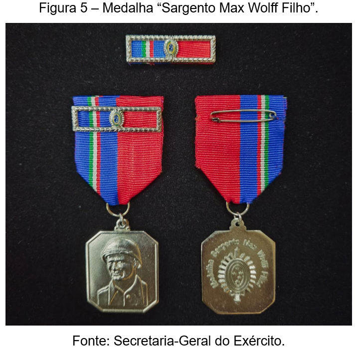

O Soldado Max Wolf Filho
Max Wolff Filho (1911–1945) foi um sargento brasileiro que se destacou na Segunda Guerra Mundial integrando a Força Expedicionária Brasileira (FEB) na Itália. Conhecido como o "Rei dos Patrulheiros" por sua coragem ao liderar missões arriscadas em território inimigo, ele foi morto em ação durante a Batalha de Montese, em 12 de abril de 1945. Homenageado no Brasil e no exterior por sua bravura, ele é hoje o patrono da Escola de Sargentos das Armas (ESA).

Sargento Max Wolff Filho na Segunda Gurra Mundial
Max Wolff Filho foi um militar brasileiro que se destacou na Segunda Guerra Mundial como integrante da Força Expedicionária Brasileira (FEB). Enviado para a Itália, participou de importantes combates contra as forças alemãs, demonstrando coragem e liderança em diversas missões. Em 12 de abril de 1945, morreu em combate durante uma operação na região de Montese. Por seu heroísmo, foi condecorado e é lembrado como um dos grandes exemplos de bravura dos soldados brasileiros na guerra.

A Morte De Max Wolff Filho
Max Wolff Filho morreu em 12 de abril de 1945, durante a Batalha de Montese, na Itália, enquanto liderava seus soldados em combate contra as tropas alemãs. Sua morte simboliza a coragem, o espírito de liderança e o sacrifício dos brasileiros que lutaram na Segunda Guerra Mundial. Até hoje, ele é lembrado como um herói da Força Expedicionária Brasileira e um exemplo de dedicação ao seu país

curiosidades de Max Wolf Filho
Curiosidade 1
Max Wolff Filho ficou conhecido como o “Rei dos Patrulheiros” por sua coragem e liderança durante a Segunda Guerra Mundial. Ele participava frequentemente de missões de reconhecimento, muitas delas realizadas durante a noite e em áreas próximas às posições inimigas.
Curiosidade 2
Max Wolff Filho nasceu em Rio Negro, no Paraná, em 1911, e começou sua carreira militar em Curitiba. Durante a Segunda Guerra Mundial, integrou a Força Expedicionária Brasileira (FEB) e foi enviado para lutar na Itália junto aos soldados brasileiros.
Curiosidade 3
Em 12 de abril de 1945, poucos dias antes do fim da guerra na Itália, Max Wolff Filho morreu durante uma missão de reconhecimento. Por sua bravura, recebeu condecorações militares postumamente, incluindo a Cruz de Combate de 1ª Classe e a americana Bronze Star.